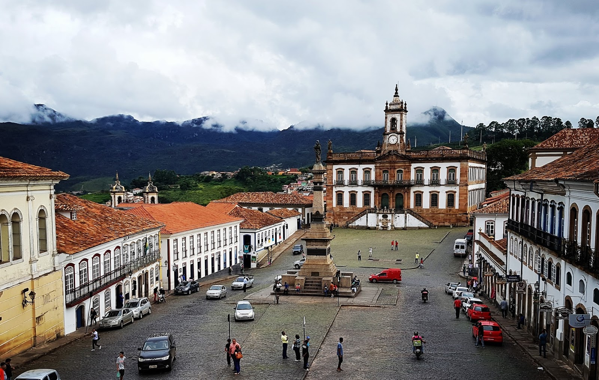

⛪ Ouro Preto – Um Mergulho na História do Brasil ⛪
Ouro Preto é um verdadeiro museu a céu aberto. Com suas ladeiras de pedra, igrejas barrocas e casarões coloniais, a cidade preserva com orgulho o legado da época do ouro e da Inconfidência Mineira.
Declarada Patrimônio Mundial pela UNESCO, é o destino ideal para quem busca cultura, arte, história e uma atmosfera encantadora nas montanhas de Minas Gerais.
Descubra Ouro Preto — onde cada rua conta uma história.